R)R, University of EdinburghR
RTRUE (1) or FALSE (0)R notationTRUE (1) or FALSE (0)All laughter takes a chance
Therefore
All rivers take a chance
TRUE, even though it sounds like New Age “wisdom”# R-ish for "equals" or "is" is ==, not = !
weekdays(Sys.Date()) == "Wednesday"
[1] FALSE
2 == 5
[1] FALSE
# object orange has the value "apple" (premise)
orange <- "apple"
orange == "apple"
[1] TRUE==, is an example)!)& in R)|)xor() function in R)TRUE if either of the partial statement is TRUE or both of them are TRUETRUE if and only if one of the statements is TRUER%in% is a membership operator in R – a %in% A means “element a is in the object A”; Its result is TRUE/FLASEA <- 1:5 # A contains numbers from 1 to 5
B <- c(-1, 3, 5, 7) # B contains numbers -1, 3, 5, and 7
1 %in% A
[1] TRUE
1 %in% B
[1] FALSE%in% is an object containing several elements, the results will be one logical value per element (i.e., %in% is vectorised)A %in% B
[1] FALSE FALSE TRUE FALSE TRUE!)TRUE to FALSE and vice versaA == B is FALSE, !(A == B) or A != B will be TRUEa <- TRUE
!a
[1] FALSE
!(1 %in% A)
[1] FALSE&)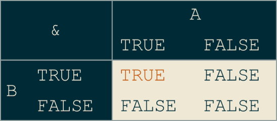
1 %in% A & 5 %in% B # 1 is in A AND 5 is in B
[1] TRUE!(A & B) is equivalent to xor(A, B) | (!A & !B)
|)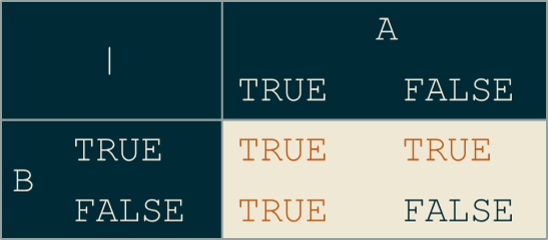
-30 %in% A | 5 %in% B # first FALSE, second TRUE
[1] TRUE!(A | B) is equivalent to (!A & !B)
xor())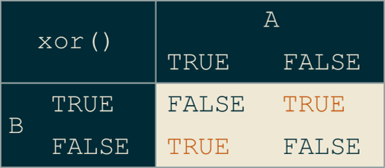
xor(5 %in% A, -1 %in% B) # both TRUE
[1] FALSE!xor(A, B) is equivalent to (A & B) | (!A & !B)
A and B from before as sets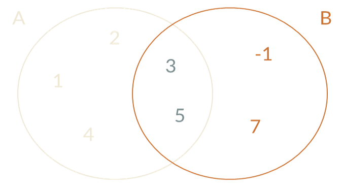
A is a set that only contains elements that are also in AC and D are equal if and only if C is a subset of D AND D is a subset of CA that is not equal to A is called proper subsetAAB…A and B consists of elements that are present in both of these setsA & B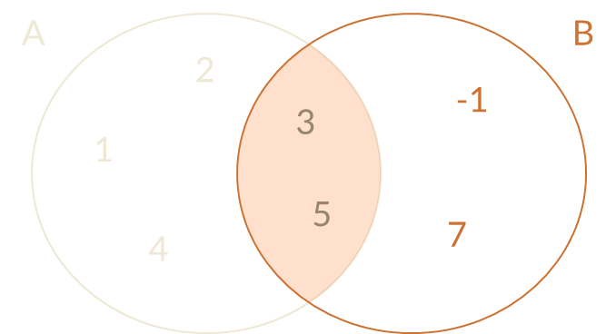
A and B consists of all elements that are present in either of these setsA | B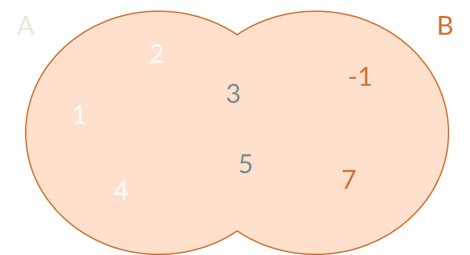
B and A consists of all elements that are in B but not in AB & !A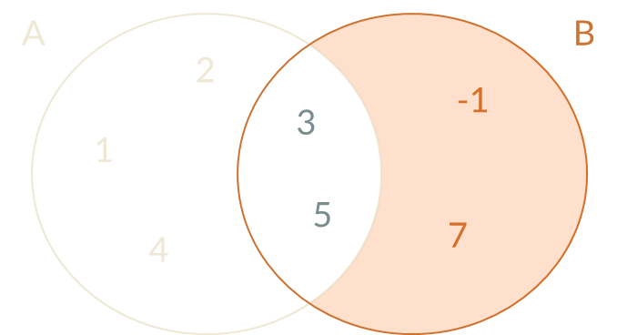
C and D such that C is equal to D?A consists of all elements that are in the universal set but not in A!A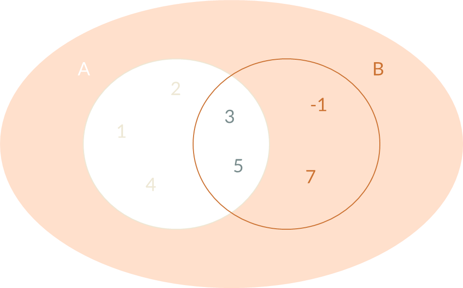
A – B and B – A?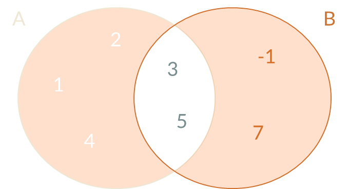
xor(A, B) or (A & !B) | (B & !A)Suppose you’re on a game show, and you’re given the choice of three doors. Behind one door is a car, behind the others, goats. You pick a door, say #1, and the host, who knows what’s behind the doors, opens another door, say #3, which has a goat. He says to you, “Do you want to pick door #2?” Is it to your advantage to switch your choice of doors?
If there are \(a\) ways in which \(X\) can occur and \(b\) ways in which \(X\) can fail to occur, then the probability of \(X\) occurring is \(P(X) = a/(a+b)\)
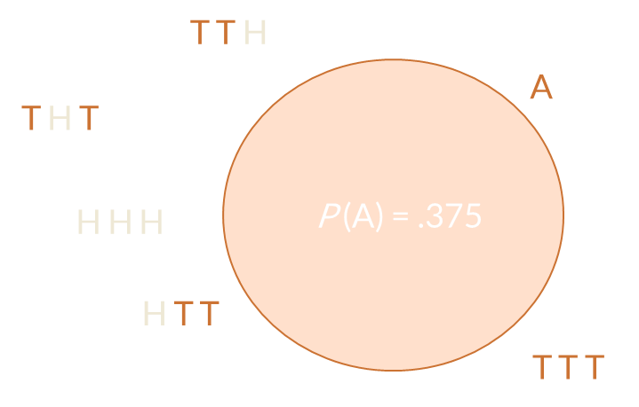
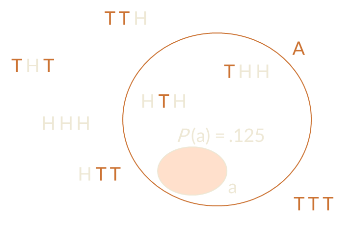
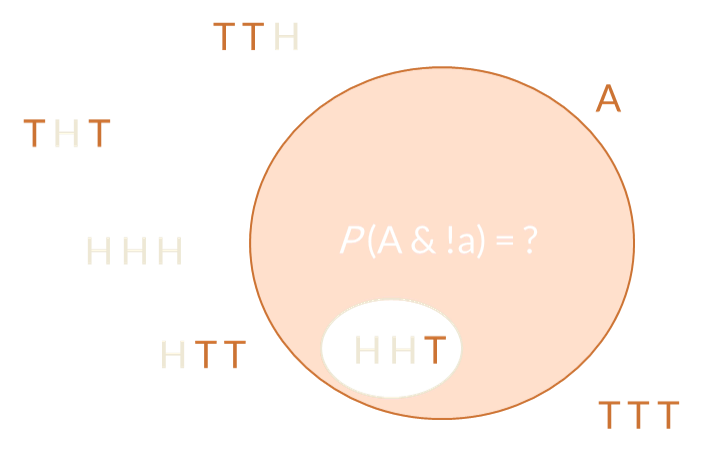
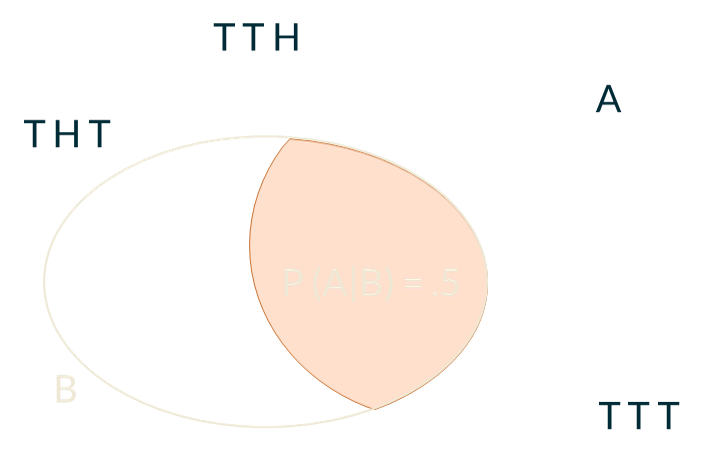
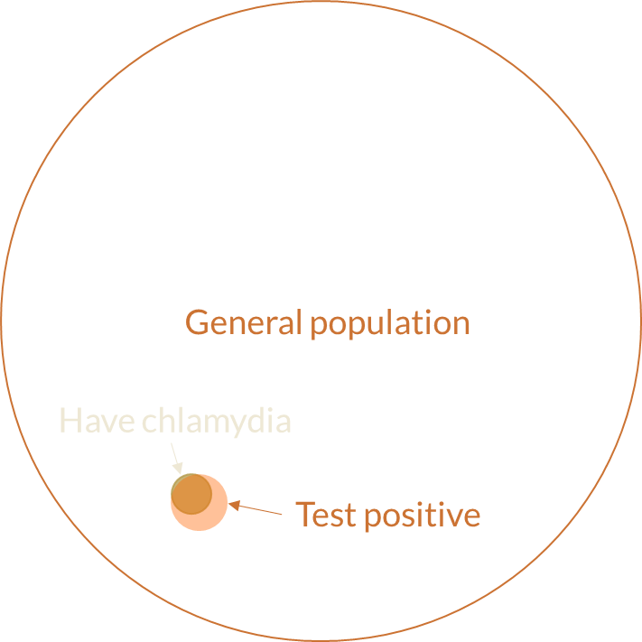
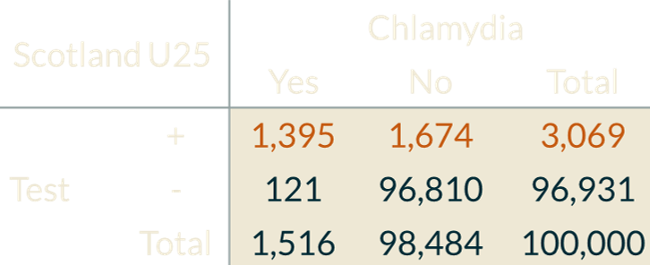
\(P(chlam|pos) = \frac{P(pos|chlam) \times P(chlam)}{P(pos)}\) \(P(chlam|pos) = \frac{sensitivity \times prevalence}{P(pos)}\) \(P(chlam|pos) \approx \frac{.92 \times .015}{.031}\)
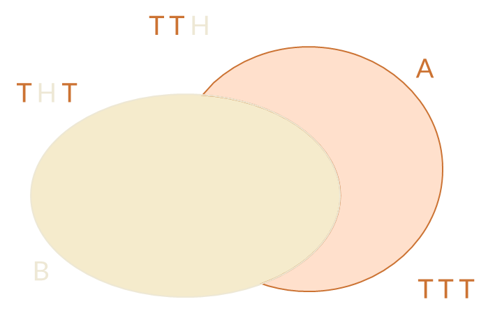
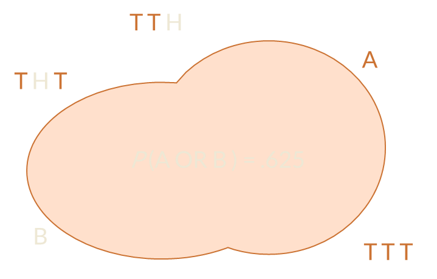